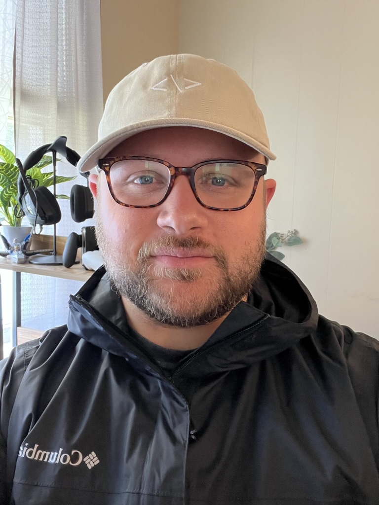

Who am I
- My name is Anthony! I am a 33 year old inspiring web developer based in Georgia. I currently hold an Associates of Science degree in Cybersecurity, and am working on a bachelors of Science in Software Engineering from Western Governers University
- Prior to my career in tech, I spent 13 years in Veterinary medicine where I learned not only medicine, but team management, communication, and task delegation.
- In my free time, I love spending time with my beautiful wife of 10 years and my son. I also enjoy anything soccer and love most of all seeing my son play!